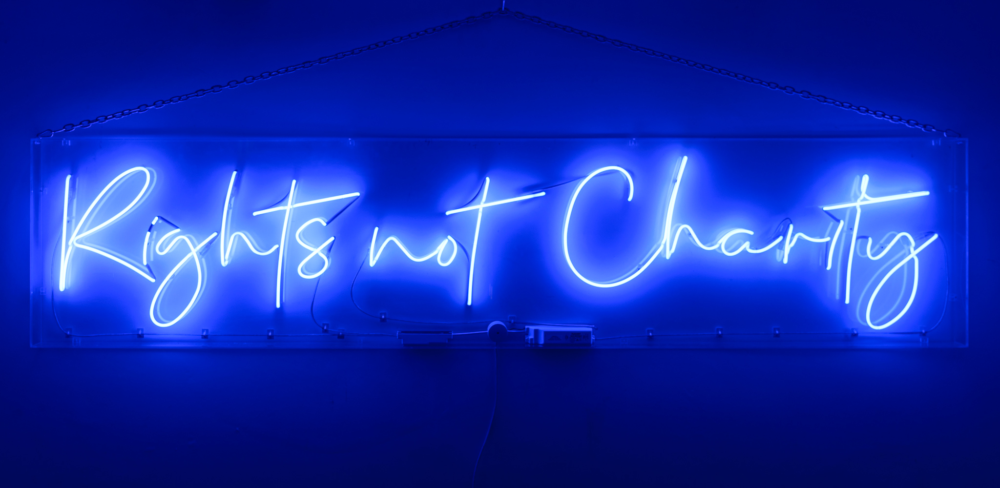
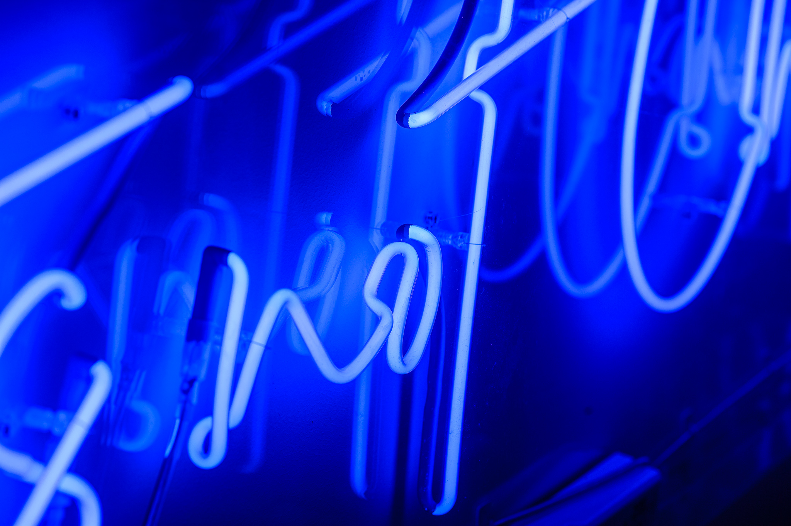

Rights Not Charity
by Zoe Partington
Image Description: The wording reads on the artwork. 'Rights not Charity'- blue marine neon lights in a stylised handwritten font. The neon words are framed inside a transparent perspex box.
Medium: neon glass tube lights/ surrounded by a Perspex box with electric plug in.
Depth: 80mm, Height: 610mm, Length: 2735mm
Weight: 59lbs 4oz (26.88kg)
Installed at FACT, Liverpool
This slogan, and variations, were adopted by disabled people in the UK, we think as far back as 1890s. In 1920, Blind men were photographed in a demo with banners saying “Justice Not Charity” and, in 1992, disabled people wore T-shirts saying, “Rights Not Charity”.
The term is not a story the world wants to hear and historically, 130 years ago, disabled people were campaigning for equal rights... and we still are. The slogan emphasises that disabled individuals are entitled to rights rather than being passive recipients of charity. This slogan advocates for systemic changes to ensure equal opportunities and treatment, to move away from paternalistic models of support. Disabled people have fought for equal rights to employment, education, information, housing and health.
- 
- 